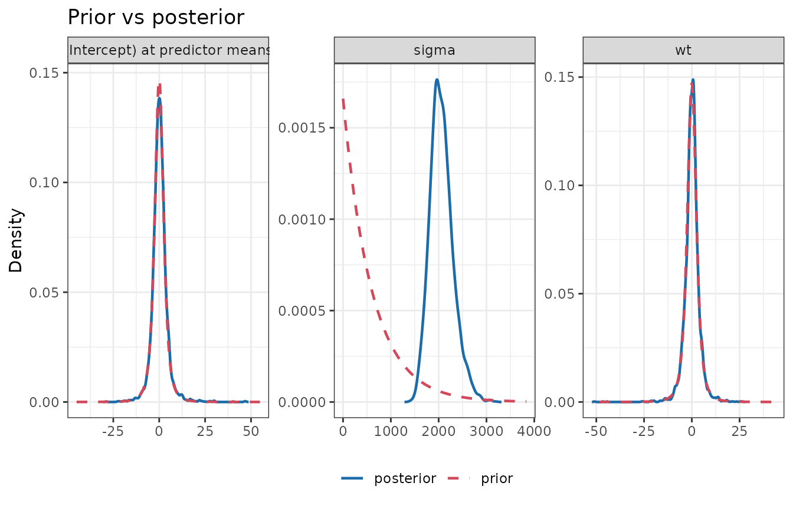
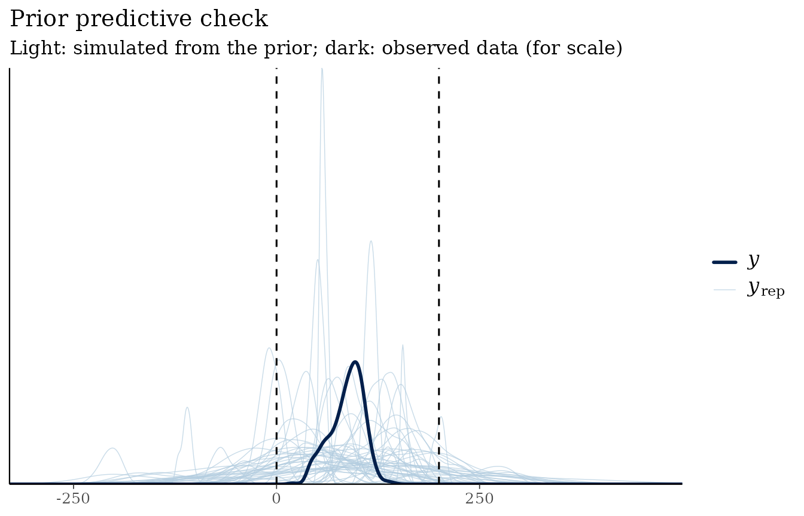
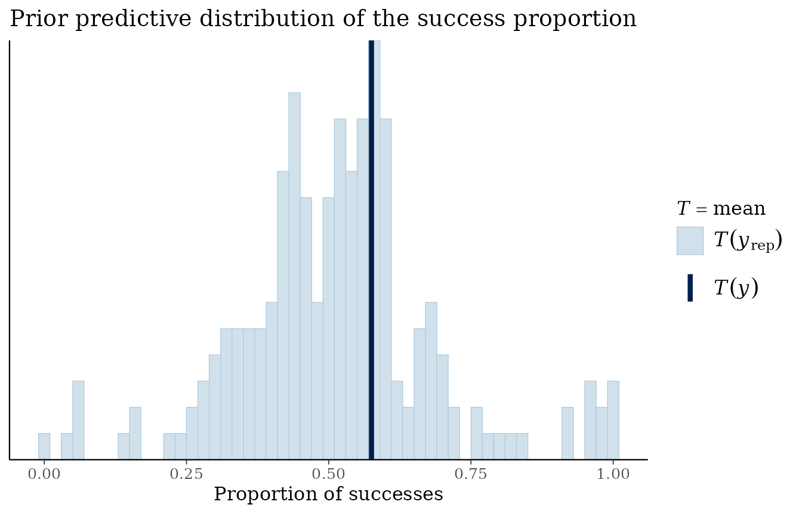

Choosing priors: scale, autoscaling and prior predictive checks
Source:vignettes/articles/priors.Rmd
priors.RmdA prior is a statement about plausible parameter values, and a regression coefficient’s plausible values depend entirely on the units of the outcome and the predictors. This article shows what goes wrong when that is ignored, the options for getting it right, and how prior predictive checks catch problems before any model is fitted.
Why scale matters
mtcars records fuel efficiency (mpg) and
weight (wt, in 1000 lbs). We fit the same model twice: once
with mpg, and once with the outcome expressed in hundredths
of a mile per gallon (mpg * 100). Nothing about the data
has changed except the units, so the second slope should be exactly 100
times the first.
First with a fixed-scale prior,
student_t(3, 0, 2.5) on every coefficient, which was the
default in bmbeR 1.x:
d <- mtcars
d$mpg100 <- d$mpg * 100
fixed <- prior_config(intercept = prior_spec("student_t", 0, 2.5, df = 3),
slope = prior_spec("student_t", 0, 2.5, df = 3))
fit_mpg <- fit_model_with_prior(d, mpg ~ wt, prior_config = fixed,
refresh = 0, on_nonconvergence = "ignore")
fit_mpg100 <- fit_model_with_prior(d, mpg100 ~ wt, prior_config = fixed,
refresh = 0, on_nonconvergence = "ignore")
rbind(
"OLS, mpg" = coef(lm(mpg ~ wt, d)),
"fixed prior, mpg" = coef(fit_mpg),
"OLS, mpg*100" = coef(lm(mpg100 ~ wt, d)),
"fixed prior, mpg*100" = coef(fit_mpg100)
)
#> (Intercept) wt
#> OLS, mpg 37.28512617 -5.3444716
#> fixed prior, mpg 36.74066218 -5.1962046
#> OLS, mpg*100 3728.51261673 -534.4471573
#> fixed prior, mpg*100 -0.07467113 0.1569807On the original scale the prior is harmless. On the rescaled outcome
the same prior says “the slope is almost certainly within a few units of
zero”, while the data say it is around −530. The prior wins: the model
attributes everything to noise (look at sigma).
plot_prior_posterior(fit_mpg100)
The MCMC diagnostics do not flag this, because the chains mix perfectly well around the wrong answer:
attr(fit_mpg100, "bmb_convergence")$converged
#> [1] TRUETwo checks do catch it. Before fitting, a prior
predictive check shows that these priors expect outcomes centred on
zero, far from any plausible value of mpg * 100:
prior_predictive_check(d, mpg100 ~ wt, prior_config = fixed,
plausible_range = c(500, 5000), refresh = 0)
#> <bmb_prior_check> 200 simulated data sets of 32 observations (gaussian family)
#> Observed outcome range : [1040, 3390]
#> Prior predictive quantiles : 1%: -2320 | 5%: -1175 | 50%: 2.063 | 95%: 1241 | 99%: 2446
#> Mean of simulated data (5%, 50%, 95%): -148.7, -0.6828, 182.7
#> Share of simulated values outside plausible range [500, 5000]: 85.0%
#> ! More than 5% of prior predictive values are implausible: consider tighter
#> or better-located priors.After fitting, prior_sensitivity()
shows that the posterior is dominated by the prior. The posterior has
found a self-consistent but wrong explanation: with a huge residual SD
the data carry almost no information about the slope, so the local
diagnosis is “weak likelihood”, and the slope’s posterior contraction is
close to zero despite 32 observations with a strong relationship.
s <- prior_sensitivity(fit_mpg100)$summary
s[, c("variable", "mean", "contraction", "diagnosis")]
#> variable mean contraction diagnosis
#> (Intercept) (Intercept) 2.517843e-01 -0.01856442 weak likelihood
#> wt wt 6.088883e-02 0.12572857 weak likelihood
#> sigma sigma 2.061119e+03 0.83814473 informative priorPower-scaling diagnostics are local: they describe the posterior you obtained, not the one you should have obtained. That is why the prior predictive check, which is a global check, comes first.
Four ways to get the scale right
-
Standardise outcome and predictors, then use
unit-scale priors such as
normal(0, 1). Simple and transparent, but coefficients must be back-transformed for interpretation. -
Autoscale.
prior_spec(..., autoscale = TRUE)lets rstanarm rescale the prior by the standard deviations of the outcome and predictors (Gelman et al., 2008). Components you leaveNULLinprior_config()use rstanarm’s autoscaled defaults. - Use substantive knowledge in the natural units, as in the Get started vignette.
-
Derive priors from data defensibly with
empirical_bayes_priors()(see the Data-informed priors article).
With the (autoscaled) defaults, the two fits agree up to the change of units:
fit_default <- fit_model_with_prior(d, mpg100 ~ wt, refresh = 0)
coef(fit_default)["wt"] / coef(fit_mpg)["wt"]
#> wt
#> 102.2612rstanarm::prior_summary() shows what autoscaling
did:
rstanarm::prior_summary(fit_default)
#> Priors for model 'fit_default'
#> ------
#> Intercept (after predictors centered)
#> Specified prior:
#> ~ normal(location = 2009, scale = 2.5)
#> Adjusted prior:
#> ~ normal(location = 2009, scale = 1507)
#>
#> Coefficients
#> Specified prior:
#> ~ normal(location = 0, scale = 2.5)
#> Adjusted prior:
#> ~ normal(location = 0, scale = 1540)
#>
#> Auxiliary (sigma)
#> Specified prior:
#> ~ exponential(rate = 1)
#> Adjusted prior:
#> ~ exponential(rate = 0.0017)
#> ------
#> See help('prior_summary.stanreg') for more detailsPrior predictive checks
A prior predictive check simulates outcomes from the priors alone (the likelihood is switched off) and asks whether they look like data that could plausibly have been observed (Gabry et al., 2019). It is the most direct way to see what a set of priors means.
A continuous outcome
data(kidiq, package = "rstanarm")
pc_default <- prior_predictive_check(kidiq, kid_score ~ mom_iq + mom_hs,
plausible_range = c(0, 200), refresh = 0)
pc_default
#> <bmb_prior_check> 200 simulated data sets of 434 observations (gaussian family)
#> Observed outcome range : [20, 144]
#> Prior predictive quantiles : 1%: -164.7 | 5%: -74.91 | 50%: 85.42 | 95%: 245.4 | 99%: 341
#> Mean of simulated data (5%, 50%, 95%): 11.48, 84.37, 166.5
#> Share of simulated values outside plausible range [0, 200]: 26.8%
#> ! More than 5% of prior predictive values are implausible: consider tighter
#> or better-located priors.rstanarm’s defaults are deliberately weak: a noticeable share of simulated test scores are negative or above 200. That is often acceptable (weak priors let the data speak), but the check makes the trade-off visible. Priors based on what test scores can look like (see the Get started vignette) keep the simulations in a sensible range.
plot(pc_default)
Logistic regression: “non-informative” priors are informative
For binary outcomes, wide priors on the logit scale are a classic
trap. The wells data (Gelman & Hill, 2007) record
whether households in Bangladesh switched away from an unsafe well.
Consider three sets of priors for a model with three predictors:
data(wells, package = "rstanarm")
wells$dist100 <- wells$dist / 100
f <- switch ~ dist100 + arsenic + educ
wide <- prior_config(intercept = prior_spec("normal", 0, 10),
slope = prior_spec("normal", 0, 10))
narrow <- prior_config(slope = prior_spec("normal", 0, 0.5, autoscale = TRUE))
checks <- list(
"normal(0, 10)" = prior_predictive_check(wells, f, binomial(), wide, refresh = 0),
"rstanarm default" = prior_predictive_check(wells, f, binomial(), NULL, refresh = 0),
"normal(0, 0.5), autoscaled" = prior_predictive_check(wells, f, binomial(), narrow, refresh = 0)
)
sapply(checks, function(x) x$summary$share_extreme)
#> normal(0, 10) rstanarm default
#> 0.9058278 0.5127947
#> normal(0, 0.5), autoscaled
#> 0.2277599The numbers are the share of prior predictive success probabilities
below 5% or above 95%. The “vague” normal(0, 10) prior
claims that almost every household’s decision is a foregone conclusion.
Even the weakly informative default does this for a large share of
households, because the variances of independent coefficient priors add
up on the logit scale as predictors accumulate (Gelman et al., 2020).
Tighter, autoscaled priors spread the probabilities more evenly, which
matches what we actually believe before seeing the data.
plot(checks[["normal(0, 10)"]])
#> Note: in most cases the default test statistic 'mean' is too weak to detect
#> anything of interest.
Checklist
- Write priors in the units of your data, or standardise, or autoscale.
- Run
prior_predictive_check()with aplausible_rangeyou can defend. - After fitting, run
prior_sensitivity(): aprior-data conflictor a smallcontractiontells you the prior is doing more work than you may have intended.
References
Gabry, J., Simpson, D., Vehtari, A., Betancourt, M., & Gelman, A. (2019). Visualization in Bayesian workflow. JRSS A, 182(2), 389–402.
Gelman, A., & Hill, J. (2007). Data Analysis Using Regression and Multilevel/Hierarchical Models. Cambridge University Press.
Gelman, A., Jakulin, A., Pittau, M. G., & Su, Y.-S. (2008). A weakly informative default prior distribution for logistic and other regression models. The Annals of Applied Statistics, 2(4), 1360–1383.
Gelman, A., Vehtari, A., Simpson, D., et al. (2020). Bayesian workflow. arXiv:2011.01808.